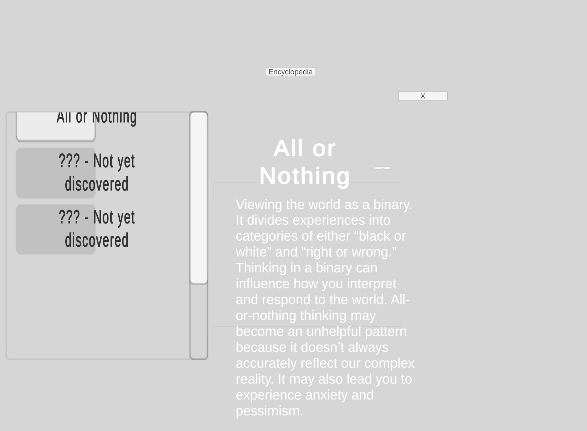

01 Project Framing: Converting Metacognition Into a Player Action
What I Was Designing
The Glad Game is a solo transformational game prototype about noticing distorted thinking in everyday language. The project began with a broad interest in metacognition: helping people become more aware of how they think. The difficult part was turning that ambition into a player action I could design, test, and improve.
By the end of the semester, I had narrowed the goal to a specific practice: pause, inspect a thought, and identify the language that makes it distorted or disproportionately negative. The final prototype places that practice inside a narrative adaptation of Pollyanna. Players swipe through conversations, encounter moments that may contain distorted thinking, dissect selected sentences word by word, and build an encyclopedia of patterns they have encountered.
The project changed substantially before reaching that form. I spent the semester moving through research, a systems-heavy life-coaching simulation, a card-swipe interaction prototype, several resource models, a bias-recognition test, and finally a narrative structure that could support both learning and emotional stakes.
- Begin with the broad goal of metacognitive awareness
- Test the goal through a life-coach systems prototype
- Reduce reading friction through swipe-based interaction
- Define sentence-level recognition as the core mechanic
- Place the practice inside a Pollyanna-inspired narrative
02 Learning Design: Recognition Was Harder Than Recall
I started with a value I cared about, not a mechanic: I wanted to help people become more aware of their own thinking. That immediately opened a much larger problem space than I could responsibly design for in one semester.
My early research moved through metacognition, reflective practice, cognitive psychology, CBT, growth mindset, cognitive biases, decision-making, and self-improvement frameworks. I also explored several possible project directions before committing to metacognitive awareness. The research was useful, but it also exposed my biggest early design problem: I did not yet have a precise transformation I could observe in play.
An interview about Positive Intelligence gave me a useful behavioral sequence: awareness → naming → choosing → shifting. The conversation reinforced that naming gives people language for thought patterns, but awareness has to come first. If a person never notices the thought, the rest of the sequence cannot happen.
I then used surveys and small recognition exercises to test what people already knew. The result refined my assumption. People were often intellectually familiar with cognitive biases and could understand the category names. The harder task was recognizing those patterns inside an actual thought, especially identifying which words or phrases made the thinking distorted.

The design problem became: how can I get players to stop, inspect a thought, and notice the structure of the distortion?
That gave me a concrete skill to design around. The intended long-term behavior was broader reflection outside the game, but the prototype itself could focus on a measurable first step: contextual recognition.

03 Systems Design: A Measurable System Still Felt Like a Quiz
A Thoughtful System With the Wrong Player Experience
My first substantial game concept cast the player as a life-design coach. Clients arrived with dilemmas, hidden priorities, different interaction styles, and thought patterns that could cloud what they actually wanted. The player's job was to explore the client's situation, identify distorted thinking, infer their priorities, and recommend a direction.
I spent a lot of effort deciding what the game should track because I wanted the system to reflect whether the player had actually understood the client. The prototype included several interacting variables:
Reflection Tokens
A limited resource for prompting clients to examine a possible bias, intended to prevent brute-force questioning.
Client Trust
A changing 0–10 state that affected how much a client was willing to reveal during the session.
Implicit Priorities
Rest, connection, adventure, and achievement — values the player had to infer and reorder in a notebook.
Rating & Profile Match
The end result combined trust with how closely the player's conclusion matched the client's underlying priorities.
I also considered client interaction styles, different life topics, recurring sessions, encyclopedia unlocks, and the order in which questions could reveal new information. On paper, the structure gave me many ways to measure whether the player understood the client.

The playtest revealed the deeper issue. Players were thinking carefully, but they had limited agency. They were reading, analyzing, and deciding when to use a prompt, yet the experience still felt like a quiz wrapped in dialogue. The character writing also had to carry an enormous amount of the experience, which made the content scope difficult for a solo project.

I stopped polishing the counseling simulation. The problem was not presentation. The player experience was built around the wrong structure, so I kept the learning goal and rebuilt the game around a simpler interaction.
04 Interaction Design: Swiping Reduced Reading Friction
The project still depended on reading short pieces of dialogue and judging what they meant. My next design goal was straightforward: make reading feel lighter and make each decision happen with as little interface friction as possible.
I tested a card-swipe interaction inspired by Reigns and Lapse. I first used a lightweight prototype to answer one narrow question: could swiping support the rhythm of reading and responding that this game needed? The answer was yes. The interaction was fast, readable, and simple enough to keep.
The resource model was much harder. I explored versions with trust, emotionality, negativity, and multiple resources attached to dialogue choices. A four-resource structure made sense in games where players are constantly balancing competing pressures. My content did not naturally produce that relationship. The system kept becoming complicated without strengthening the transformational action.
I eventually reduced the final prototype to a single negativity meter. Identifying distorted language correctly prevents or reduces accumulated negativity. The meter gives the player immediate stakes without asking them to manage a second game layered on top of the learning mechanic.
Keep the player's attention on the sentence instead of menus or navigation.
One gesture advances dialogue and records the player's response, keeping the rhythm lightweight.
The interaction prototype answered one narrow question: could swiping make a text-heavy experience easier to read and move through? It could, so I kept it and continued iterating the game around it.
05 Gameplay Design: Sentence Evidence Became the Core Mechanic
I still needed to answer the most important learning question: what does it mean to practice recognizing a distortion instead of reading an explanation of one?
I created a small test where players matched distorted-thinking examples to category names and highlighted the words that informed their judgment. The test clarified the problem. The category names themselves were not the main barrier. Applying the concepts to real sentences was harder, and the language inside a sentence mattered.
That finding led to the sentence-dissection mechanic. During selected dialogue moments, the game pulls out a sentence and separates it into selectable words. Players identify the wording they believe contributes to the distorted thought. The action forces a pause: they cannot move forward by recognizing the general mood alone; they have to inspect how the thought is constructed.
- Read the character’s thought in context
- Pause when the thought may contain a distortion
- Break the sentence into selectable words
- Identify the wording that signals the pattern
- Connect the example to a named cognitive bias
Authoring for Ambiguity
This made writing part of the game system. A useful line could not simply sound negative. Different distortions depend on different evidence: absolutes such as always and never, prescriptive language such as should, unsupported predictions, labels, minimization, personalization, or conclusions that are disproportionate to reality.
I therefore had to choose sentences carefully. Some dialogue could be ordinary or emotionally negative without containing a distortion. Other lines could contain one pattern or overlapping patterns. That distinction mattered because the game should not train players to assume that every uncomfortable statement is automatically biased.
I initially hoped the learning could stay almost entirely inside the narrative. That became too implicit, so I added an encyclopedia. When players encounter a new pattern, they collect it as a reference. A recurring Father character introduces the pattern the first time it appears and can provide a reminder later. This lets the dialogue remain character-focused while still giving players explicit language for what they practiced.

06 Narrative Design: Pollyanna Gave Recognition Emotional Stakes
By this point, I had a clearer learning mechanic, but the game still lacked emotional stakes. The player could identify distorted thinking without caring very much about the person who was saying it.
I adapted Pollyanna because the story already revolves around how people interpret difficult circumstances. That gave the mechanic a narrative home and gave me an existing cast whose relationships could carry emotional context. It also let me focus my limited development time on content progression and gameplay instead of building a new world from scratch.
I structured the full version as a progression from helping other people toward applying the same awareness to Pollyanna herself:
Father
Teach the Glad Game, swipe interaction, and first sentence-dissection moments.
Nancy · Old Tom · Aunt Polly
Practice clearer patterns such as all-or-nothing thinking and should statements while helping townspeople.
Mr. Pendleton · Dr. Chilton · Jimmy Bean
Introduce personalization, fortune-telling, and mind-reading through more ambiguous emotional situations.
Pollyanna
After the accident, turn the skill inward. Reuse earlier patterns and add denial/minimization; identify the category with less guidance.
The final chapter was also intended to increase the player's responsibility. Earlier encounters use Father as a teaching layer. By the ending, the player would need to identify the bias category itself, using the encyclopedia as support if needed.
Scope boundary: I designed the full chapter progression, but the semester ended before I could implement and validate the complete arc. The proof-of-concept demonstrates the core interaction and a subset of the planned story progression.
07 Design Iteration: One Negativity Meter Clarified the Loop
The project became clearer each time I separated the design problem from the solution I happened to be using at the time.
| Design Problem | Decision |
|---|---|
| “Metacognition” was too broad to design or assess directly | Focused the prototype on recognizing distorted thinking in context |
| The life-coach simulation was measurable but quiz-like | Removed the counseling structure and preserved the recognition goal |
| Text-heavy interaction created friction | Kept the Reigns/Lapse-style card interaction |
| Resource systems kept growing without serving the learning goal | Simplified the final feedback to a single negativity meter |
| Players already understood many bias names | Made sentence dissection the central practice mechanic |
| Recognition alone was not emotionally engaging | Adapted Pollyanna and designed a chapter-based learning arc |
| Narrative-only learning was too implicit | Added Father and the encyclopedia as a teaching layer |
08 Prototype Evaluation: The Core Loop Worked; the Full Arc Remained
The semester ended with a proof of concept, not a production-polished game. I used it to put the core loop in one playable build: swipe-based narrative dialogue, sentence-level recognition, immediate feedback, and explicit pattern references.
Players move through Pollyanna-inspired conversations by swiping between responses. Selected dialogue moments trigger the sentence-analysis minigame. Correct recognition reduces the accumulated negativity; missed evidence leaves part of it behind. New distorted-thinking patterns are added to the encyclopedia, and Father provides explanations when the player first encounters them.
What this build validates
The complete interaction loop can exist in one playable flow: read dialogue, identify a potentially distorted thought, inspect the sentence, receive immediate feedback, and connect the example to a reusable pattern name.
What remained untested
The full emotional arc, long-term transfer into players' own thinking, the complete three-chapter progression, and the final difficulty curve were not validated within the semester.
Reflection
This project changed the way I work as a designer. I spent the first half of the semester repeatedly falling into research because every answer opened another branch of psychology. The turning point was learning to ask a more practical question: what is the player change I am designing for, what action could produce it, and what is the riskiest assumption I can test next?
I also recognized a habit from my educational background: when I wanted someone to learn something, my first instinct was to build a quiz. The Life Coach Simulator made that tendency obvious. Throwing it away forced me to separate learning rigor from quiz structure and look for interactions, stakes, and narrative contexts that could make the practice meaningful on its own.
I learned to move the design forward through one consequential change at a time. Each iteration addressed the decision that mattered most at that stage. Reducing the resource system to one negativity value made the core loop clearer. Removing systems and narrowing scope created the clarity the project needed.
The Glad Game is the project where I most clearly learned what kind of designer I want to be: someone willing to work on difficult, high-impact questions, then keep narrowing and testing them until they become concrete enough to play.